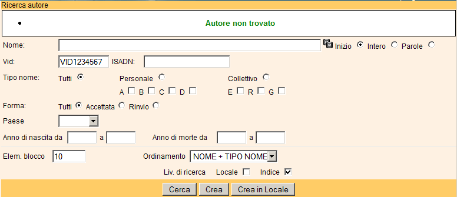
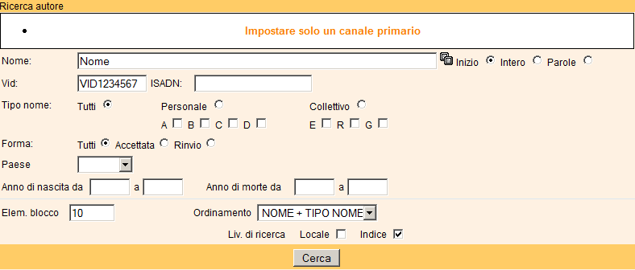
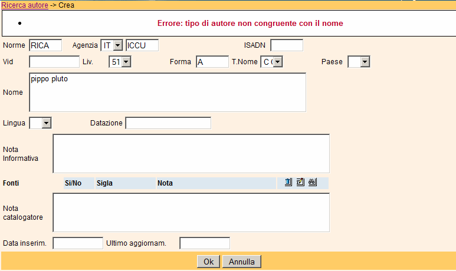
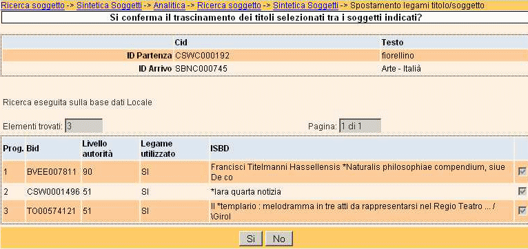

|
SBNWEB Guida Online
Tipologie di controlli del sistema I controlli di sistema avvengono:
- Prima dell'invio della richiesta al server dopo una verifica formale dal punto di vista dei contenuti immessi dall'utente
- Dall'applicativo lato server alla ricezione della richiesta (Protocollo SBNMARC e non).
- Dall'applicativo lato server in fase di elaborazione della richiesta.
I controlli possono generare messaggi volti all'utente di vario tipo.
- Messaggio informativo generato dall'applicativo
Generato a fronte di una elaborazione

- Messaggio di avvertimento generato prima di eseguire la richiesta
Generato a fronte di un controllo sui dati di input dell'utente

- Messaggio di errore generato da applicativo
Generato a fronte di un problema generato in fase di elaborazione

- Messaggio di richiesta conferma generato da applicativo
In questa caso l'utente è chiamato a confermare o rifiutare l'azione richiesta

|